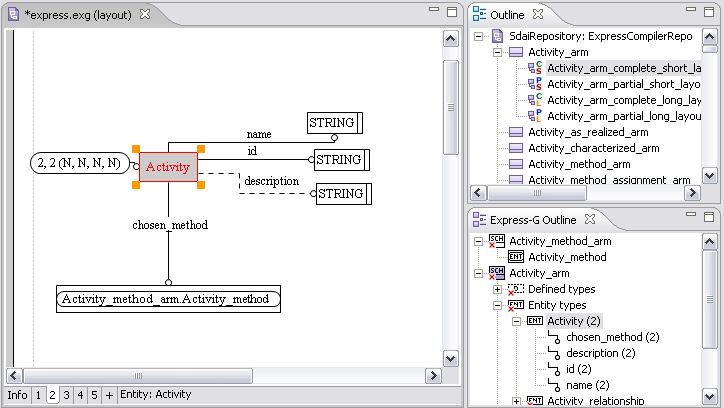

Place Object on Diagram
Follow the routine to place applicable objects from the
Express-G Outline
to the
Editor
panel:
Select an applicable object from the list in the
Express-G Outline
panel.
You can either:
Point and drag the selected object onto the
Editor
panel area.
Or
Right click on the object node and select the
Move to page
menu item from the context sensitive menu.
The graphical view of the selected object is represented in the
Editor
panel (see
Figure 1
).

Figure 1.
Selected object (Express-G Outline) is represented on the diagram (Editor)
To top
Copyright © 2005-2008
LKSoftWare GmbH
. All Rights Reserved.
JSDAI is a registered trade mark of LKSoftWare GmbH.